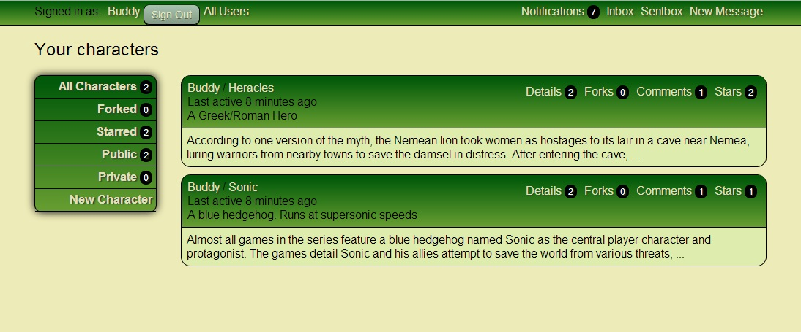
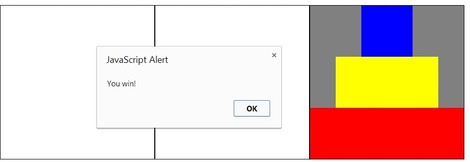

Take A Look!
Projects are down, Learning materials are on the right.

Let me tell you about how I learned!
I've been programming for nearly 10 years, since high school. I started with intro classes in high school, made some XNA pong, and continued my interest through college. When i became interested in web development, I started with books, moved on to tutorial websites, and worked my way up until I was the web developer I am today!
Check out some of the resources I used to learn on the right side. Click on the subtitle for a handy link!
Scroll down to check out some of the projects I've done recently in Ruby, Rails, and Javascript!

A Gist clone which allows writers
to post, share, and comment on short ideas.
This is the largest project I have done, and I encountered many
challenges. I also had to learn many new techniques. Check it out on
Git vHub
- Polymorphic notifications (not present in Gist)
- Counter caches and other optimizations to minimize database queries
- User messaging (not present in Gist)
- Email validation
- Social Media features, including Stars and Comments
- RESTful Rails API and main content using Backbone.js
- Public and Private posts
A clone of the popular arcade game, Asteroids
This project was my largest javascript-based program.
It was also my best work with a visual representation. Check it out on
GitHub
- Made in JavaScript with HTML5 Canvas
- Vector Algebra calculates movement and momentum
- Keymaster converts user input to degree/radian direction
- Objects loop on and off the screen
- Collision Detection

A CSS/HTML5/Jquery representation of the traditional Children's game
I wanted to improve my knowledge of CSS, so I created this game as an exercise.
Check it out on
GitHub
- Made in HTML with JQuery
- Responds to User Input using on click events
- Gives feedback via an alert if a move is invalid
- Displays "disks" by swapping the CSS class of HTML5 elements
- Utilzies highlight effects to change the background color on mouse-over
A simple proof-of-concept used to learn JQuery
I wanted to learn JQuery, so I created this game as an exercise. Precursor to Towers of Hanoi
Check it out on
GitHub
- Made in HTML with JQuery
- Responds to User Input using on click events
- Gives feedback via an alert if a move is invalid
- Places marks by swapping the CSS class of HTML5 elements
- Utilzies highlight effects to change the background color on mouse-over